Lined Pipes & Spools
Fluid transfer & fittings
Fluoropolymer lined carbon steel pipes, fittings, dip pipes, spacers, bellows and accessories to ASTM F 1545 — steel strength outside, PTFE, PFA or FEP chemistry inside, NB 1/2" to 24".
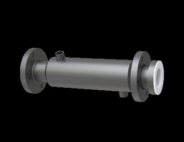
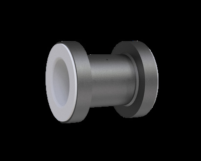
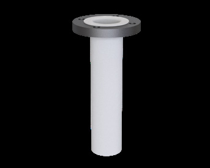

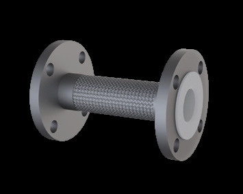

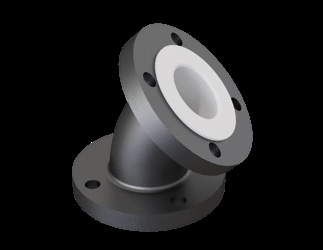
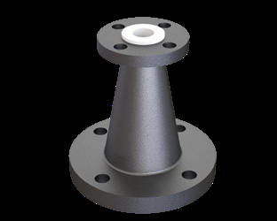
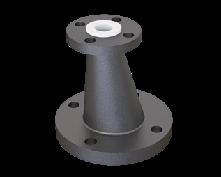
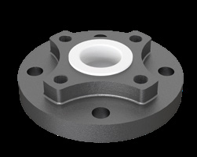
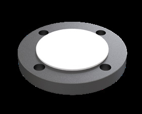
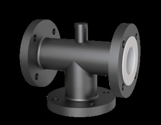
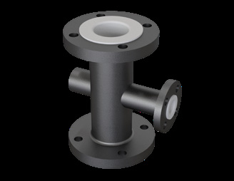
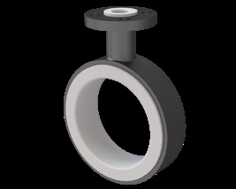
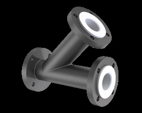
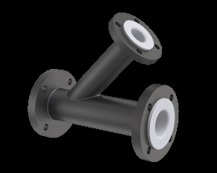
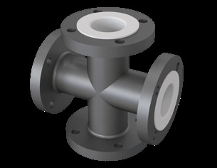
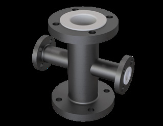
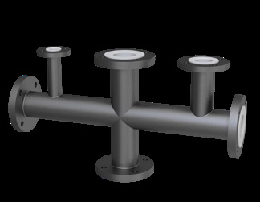
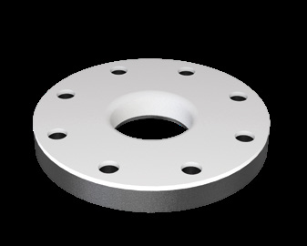
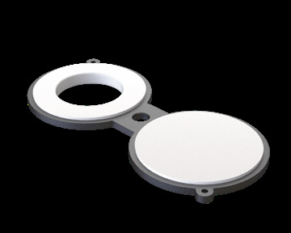
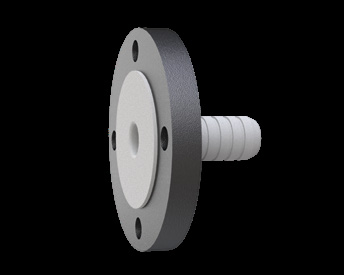


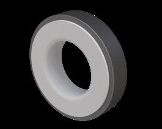
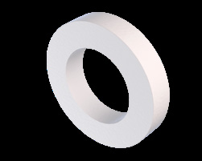

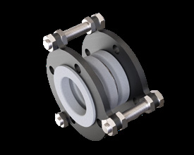
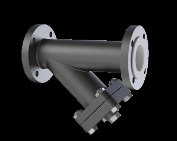
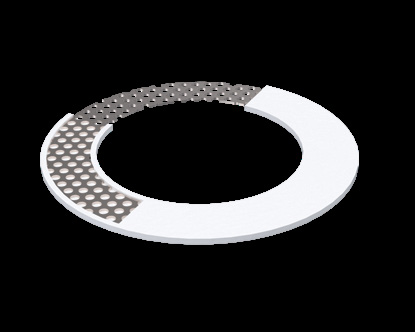
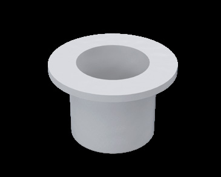
Engineering reference
These tables govern every item in this category. Product pages carry only their own dimensions.
| Size | OD (±2) | PCD (±2) | R/F (±2) | No. of holes | Hole dia. | Lining th. |
|---|---|---|---|---|---|---|
| 0.5" | 88.9 | 60.3 | 35 | 4 | 16 | 3.2 |
| 0.75" | 98.4 | 69.8 | 43 | 4 | 16 | 3.2 |
| 1" | 107.9 | 79.4 | 51 | 4 | 16 | 3.2 |
| 1.5" | 127 | 98.4 | 73 | 4 | 16 | 3.2 |
| 2" | 152.4 | 120.6 | 92 | 4 | 19 | 3.5 |
| 2.5" | 177.8 | 139.7 | 105 | 4 | 19 | 3.5 |
| 3" | 190.5 | 152.4 | 127 | 4 | 19 | 4 |
| 4" | 228.6 | 190.5 | 158 | 8 | 19 | 4.5 |
| 6" | 279.4 | 241.3 | 216 | 8 | 22 | 5.5 |
| 8" | 342.9 | 298.4 | 270 | 8 | 22 | 5.5 |
| 10" | 406.4 | 361.9 | 324 | 12 | 25 | 6.5 |
| 12" | 482.6 | 431.8 | 381 | 12 | 25 | 6.5 |
| 14" | 533.4 | 476.2 | 412 | 12 | 29 | 6.5 |
| 16" | 596.9 | 539.7 | 470 | 16 | 29 | 6.5 |
| 18" | 635 | 577.8 | 534 | 16 | 32 | 6.5 |
| 20" | 698.5 | 635 | 585 | 20 | 32 | 6.5 |
| 24" | 812.8 | 749.3 | 692 | 20 | 35 | 6.5 |
All dimensions in mm. Applies to every flanged item in the lined range.
| Process | 1/2" | 3/4" | 1" | 1.1/4" | 1.1/2" | 2" | 2.1/2" | 3" | 4" | 5" | 6" | 8" | 10" | 12" | 14" | 16" |
|---|---|---|---|---|---|---|---|---|---|---|---|---|---|---|---|---|
| V | 3 | 3 | 3 | 3 | 4 | 4 | 4 | 4 | 4.5 | 6 | 6 | 6 | 7.5 | 7.5 | — | — |
| P | — | — | — | — | — | — | — | — | — | — | — | — | — | — | 7.5 | 7.5 |
Reproduced as printed in the catalogue, which lists two lining processes (“V” and “P”) without expanding the abbreviations. Confirm the process against your duty when ordering.
| Dimension | Range | Dimensional tolerance | Angular tolerance |
|---|---|---|---|
| Lengths | 0 – 315 mm | +0; −3 mm | ± 0.5° |
| Lengths | 315 – 1000 mm | +0; −4 mm | ± 0.5° |
| Lengths | 1000 – 6000 mm | +0; −5 mm | ± 0.5° |
| Diameters | NB 1" – 4" | +0; −3 mm | ± 0.5° |
| Diameters | NB 5" – 8" | +0; −4 mm | ± 0.5° |
| Diameters | NB 10" – 24" | +0; −5 mm | ± 0.5° |
| NB | Bolts | Torque (N·m) |
|---|---|---|
| 1/2" | 4 × 1/2" | 20 |
| 3/4" | 4 × 1/2" | 20 |
| 1" | 4 × 1/2" | 30 |
| 1.1/2" | 4 × 1/2" | 30 |
| 2" | 4 × 5/8" | 60 |
| 3" | 4 × 5/8" | 60 |
| 4" | 8 × 5/8" | 60 |
| 6" | 8 × 3/4" | 110 |
| 8" | 8 × 3/4" | 110 |
| 10" | 12 × 7/8" | 160 |
| 12" | 12 × 7/8" | 180 |
| 14" | 12 × 1" | 200 |
| 16" | 16 × 1" | 190 |
| 18" | 16 × 1"1/2 | 370 |
| 20" | 20 × 1"1/8 | 370 |
| 24" | 20 × 1"1/4 | 530 |
Values are for ANSI 150 lb flanges at room temperature. Cross-tighten as with any flange joint, re-check after 24 hours of operation and then at regular intervals. Torque may vary with lubrication and the condition of nuts and bolts.
| NB | L1 — fixed / fixed | L2 — loose / loose | L3 — fixed / loose |
|---|---|---|---|
| 1/2" | 75 | 95 | 85 |
| 3/4" | 80 | 100 | 90 |
| 1" | 80 | 105 | 90 |
| 1.1/2" | 90 | 115 | 100 |
| 2" | 100 | 125 | 110 |
| 2.5" | 100 | 130 | 115 |
| 3" | 110 | 140 | 125 |
| 4" | 110 | 140 | 125 |
| 6" | 125 | 165 | 145 |
| 8" | 135 | 175 | 155 |
| 10" | 150 | 195 | 175 |
| 12" | 155 | 205 | 175 |
| 14" | 170 | 220 | 195 |
| 16" | 175 | 225 | 195 |
| 18" | 185 | 235 | 215 |
| 20" | 195 | 245 | 220 |
| 24" | 205 | 260 | 230 |
Based on a tightening torque equivalent to 1/3 the diameter of the threaded stems and a nut height equal to the stem diameter.
Send your requirement — media, temperature, pressure, dimensions — and we'll recommend the right product or fabricate it.
Talk to an engineer